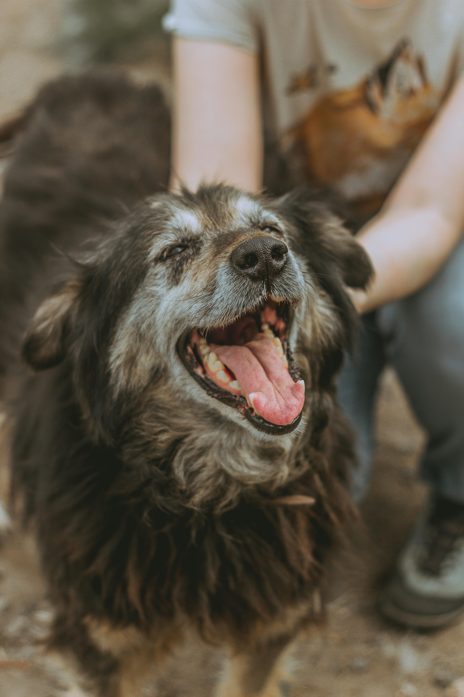
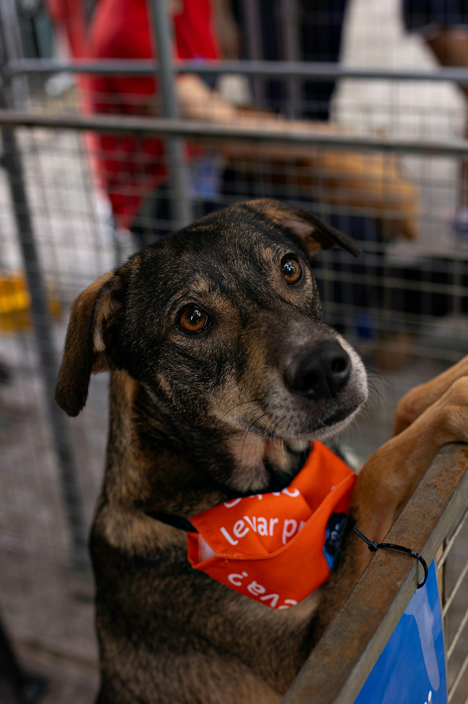

Sobre Nosotros
En Huellitas Solidarias, creemos que la grandeza de una comunidad se mide por cómo trata a sus miembros más vulnerables. Somos una organización sin fines de lucro dedicada a rescatar, rehabilitar y encontrar hogares responsables para animales en situaciones de riesgo.

Nuestra Historia
Todo comenzó en el invierno de 2018, cuando un grupo de vecinos decidió rescatar a "Capitán", un perro anciano abandonado en una estación de tren. Lo que empezó como un esfuerzo individual para salvar una vida, se transformó en una red de voluntarios apasionados. Hoy, esa chispa inicial ha permitido que más de 500 animales tengan una segunda oportunidad.

Valores y Compromisos
- Respeto por la Vida: Valoramos cada existencia por igual, brindando atención médica y amor sin distinciones.
- Transparencia: Gestionamos cada donación y recurso con total claridad hacia nuestra comunidad.
- Educación: Creemos que la clave para erradicar el abandono es concienciar a las nuevas generaciones sobre la tenencia responsable.
Equipo
- Director
- Vicedirector
- Rescatistas